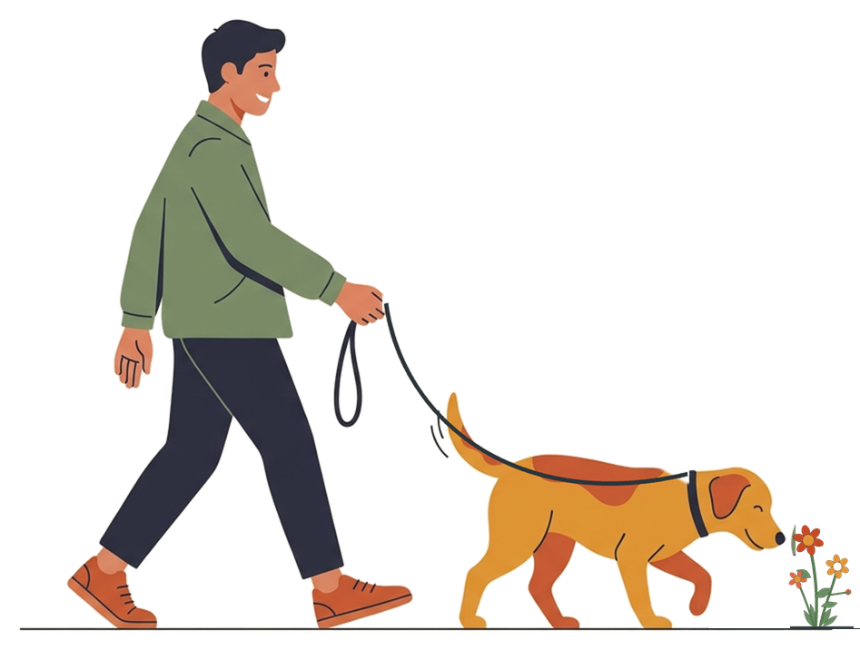
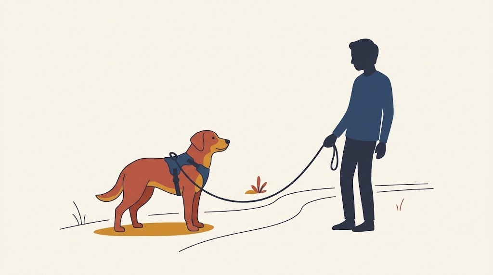
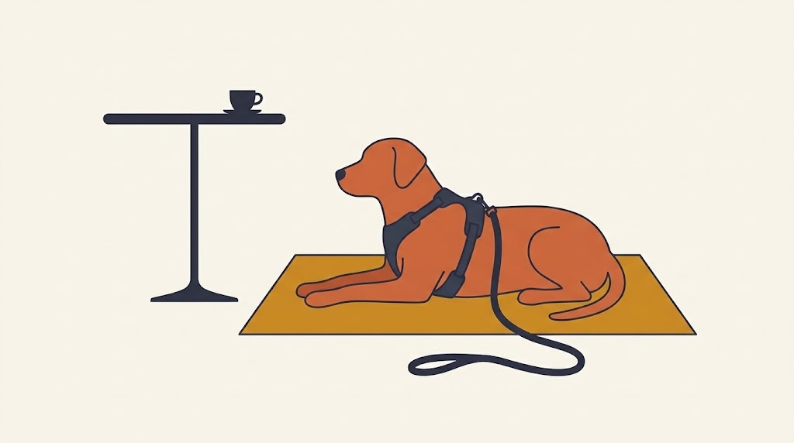
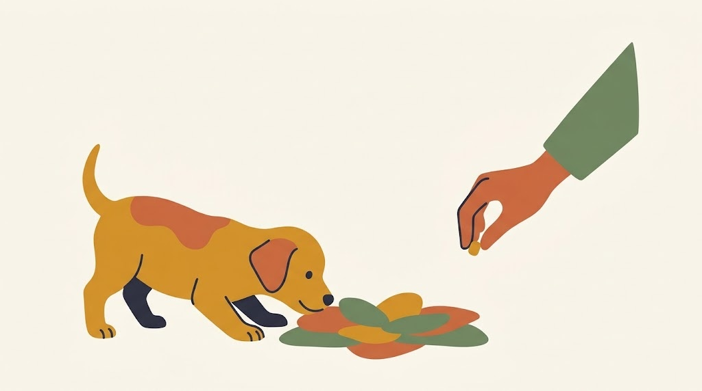
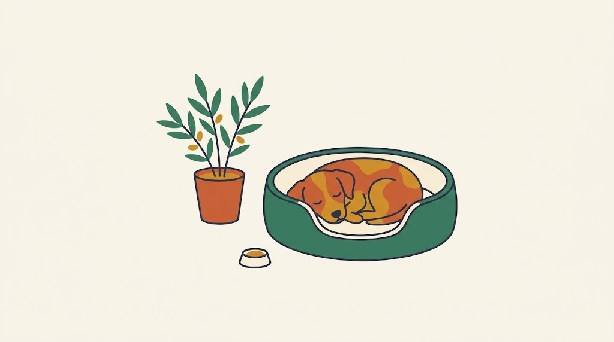

Άφησε τον σκύλο σου να μυρίσει τη ζωή στην πόλη.
Επιστημονική εκπαίδευση χωρίς καταναγκασμό, προσαρμοσμένη στις πραγματικές συνθήκες της Αθήνας. Ήρεμες βόλτες, συμβίωση χωρίς πίεση και ουσιαστικός δεσμός εμπιστοσύνης.

Συνεργασία & Καθοδήγηση
Πώς Δουλεύουμε Μαζί

Αντιμετώπιση Προβλημάτων Συμπεριφοράς
Λύνουμε μαζί φοβίες, αντιδραστικότητα, άγχος αποχωρισμού και resource guarding

Αστική Συμβίωση & Υπακοή
Χτίζουμε χαλαρή βόλτα, καλή συμπεριφορά και ήρεμη παρουσία στην πόλη

Εκπαίδευση Κουταβιού
Δώσε στο κουτάβι σου τα καλύτερα θεμέλια από την αρχή

Υιοθεσία & Πρώτη Προσαρμογή
Πριν και μετά την υιοθεσία — ο σωστός δρόμος για ένα ήρεμο ξεκίνημα
«Η βόλτα δεν είναι άσκηση υπακοής. Είναι το παράθυρο του σκύλου στον κόσμο.»
Χωρίς βία, χωρίς πνίχτες και εκφοβισμούς. Η εκπαίδευση χωρίς καταναγκασμό στηρίζεται στη συμπεριφορική επιστήμη και στον σεβασμό των αναγκών του ζώου μέσα στο απαιτητικό αστικό περιβάλλον.
Γνωρίστε τον Αλέξανδρο Τσιόλη και τη μεθοδολογίαΒασικές Αρχές
- Εκπαίδευση χωρίς καταναγκασμό — μηδενική ανοχή σε σωματική ή ψυχολογική πίεση
- Επιστημονική τεκμηρίωση: συμπεριφορική ανάλυση και σύγχρονη κτηνιατρική ηθολογία
- Σεβασμός στον ρυθμό μάθησης κάθε σκύλου και κηδεμόνα
- Εκπαίδευση στο πραγματικό περιβάλλον: σπίτι, είσοδος, αστική βόλτα στην Αθήνα
Βιβλιοθήκη Γνώσης · 18 πυλώνες · 104 Οδηγοί
Εξερευνήστε ανά Θεματική Ενότητα
Αστική Ζωή & Καθημερινότητα
Πρακτικοί οδηγοί για τη βόλτα, τη διαβίωση σε διαμέρισμα και πολυκατοικία, τις μετακινήσεις με ΜΜΜ και τη διαχείριση στα πάρκα της Αθήνας.
Συμπεριφορά, Επικοινωνία & Ψυχολογία
Συμπεριφορική ανάλυση για την αντιδραστικότητα, τους φόβους, τη γλώσσα του σώματος, τα γαβγίσματα και την ψυχολογική ισορροπία του κηδεμόνα στην πόλη.
Στάδια Ζωής & Υιοθεσία
Οδηγοί για κάθε στάδιο της ζωής του σκύλου: από την επιλογή και την άφιξη του κουταβιού ή του αδέσποτου, έως τη διαχείριση των ενστίκτων και τη φροντίδα στην τρίτη ηλικία.
Εκπαίδευση, Φροντίδα & Εξοπλισμός
Η επιστημονική βάση της θετικής ενίσχυσης, η συνεργατική φροντίδα χωρίς εξαναγκασμό, η αρμονική συμβίωση με παιδιά και η επιλογή του κατάλληλου εξοπλισμού.
Εξατομικευμένη Καθοδήγηση
Δεν είστε σίγουροι από πού να ξεκινήσετε;
Κάθε σκύλος και κάθε σπίτι στην Αθήνα έχουν τις δικές τους ανάγκες. Στείλτε μου ένα μήνυμα με λίγα λόγια για τον σκύλο σας και τις προκλήσεις που αντιμετωπίζετε, για να δούμε μαζί πώς μπορούμε να δουλέψουμε.